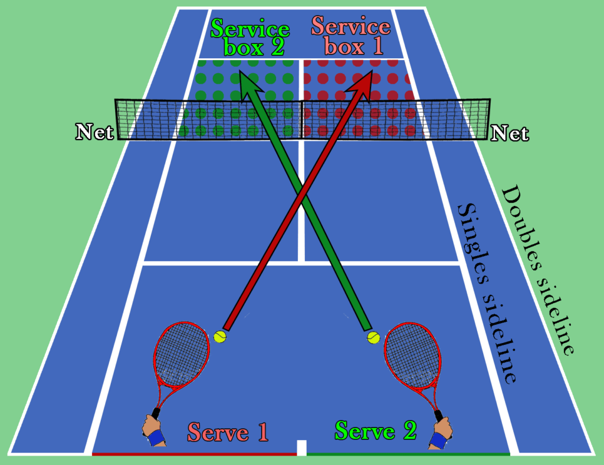

What you need to know about serving
To serve, you need to be standing behind the baseline, which is the furthest line from the net. Additionally, you must serve cross court. that means if you are standing on the left, you must serve into the right service box, and if you are on the right, you must serve into the left service box. Each point, you will get a first serve and a second serve attempt to get it in. If you miss both, you lose the point, which is why knowing how to serve is so important!
